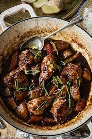

Chicken Adobo
home

What is Chicken Adobo?
Chicken Adobo is a type of Filipino chicken stew. Chicken pieces are marinated in soy sauce and spices, pan-fried, and stewed until tender. The dish gained popularity because of its delicious taste and ease in preparation.
Ingredients:
Marinate:
- 4 lbs chicken thighs
- 1/2 cup white vinegar
- 1/2 cup soy sauce
- 4 gloves of garlic
- 1 tsp black peppercorns
- 3 bay leaves
- Steamed white rice as a side dish
Directions
- Combine the chicken thighs, vinegar, soy sauce, garlic, peppercorns and bay leaves in a large pot. Cover and marinate the chicken in the refrigerator for 1 to 3 hours.
- Bring the chicken to a boil over high heat. Lower the heat, cover and let simmer for 30 minutes, stirring occasionally. Remove the lid and simmer until the sauce is reduced and thickened and the chicken is tender, about 20 more minutes. Serve with steamed rice.